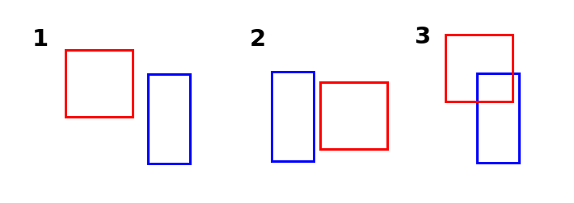
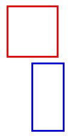
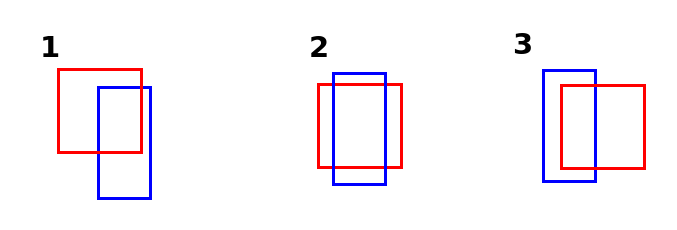

Let's say we're making a game where you can shoot down monsters. A monster should die when it is hit by a bullet. So what we need to check is: Is the monster colliding with a bullet?
We're going to create a collision check function. For that we need to know, when do 2 rectangles collide?
I created an image with 3 examples:

It's time to turn on that programmer brain if you haven't already. What is going on in the third example that isn't happening in the first and second example?
"They are colliding"
Yes, but you have to be more specific. We need information that the computer can use.
Take a look at the positions of the rectangles. In the first example, Red is not colliding with Blue, because Red is too far to the left. If Red was a bit further to the right, they would touch. How far exactly? Well, if Red's right side is further to the right than Blue's left side. This is something that is true for example 3.
But it's also true for example 2. We need more conditions to be sure there is collision. So example 2 shows we can't go too far to the right. How far exactly can we go? How much would Red have to move to the left for there to be collision? When Red's left side is further to the left than Blue's right side.
So we have 2 conditions, is that enough to ensure there is collision?
Well no, look at the following image:

This situation agrees with our conditions. Red's right side is further to the right than Blue's left side. And Red's left side is further to the left than Blue's right side. Yet, there is no collision. That's because Red is too high. It needs to move down. How far? Till Red's bottom side is further to the bottom than Blue's top side.
But if we move it too far down, there won't be collision anymore. How far can Red move down, and still collide with Blue? As long as Red's top side is further to the top than Blue's bottom side.
Now we got 4 conditions. Are all 4 conditions true for these 3 examples?

Red's right side is further to the right than Blue's left side.
Red's left side is further to the left than Blue's right side.
Red's bottom side is further to the bottom than Blue's top side.
Red's top side is further to the top than Blue's bottom side.
Yes, they are! Now we need to turn this information into a function.
First let's create 2 rectangles.
function love.load()
--Create 2 rectangles
r1 = {
x = 10,
y = 100,
width = 100,
height = 100
}
r2 = {
x = 250,
y = 120,
width = 150,
height = 120
}
end
function love.update(dt)
--Make one of rectangle move
r1.x = r1.x + 100 * dt
end
function love.draw()
love.graphics.rectangle("line", r1.x, r1.y, r1.width, r1.height)
love.graphics.rectangle("line", r2.x, r2.y, r2.width, r2.height)
endNow we create a new function called checkCollision(), with 2 rectangles as parameters.
function checkCollision(a, b)
endFirst we need the sides of the rectangles. The left side is the x position, the right side is the x position + the width. Same with y and height.
function checkCollision(a, b)
--With locals it's common usage to use underscores instead of camelCasing
local a_left = a.x
local a_right = a.x + a.width
local a_top = a.y
local a_bottom = a.y + a.height
local b_left = b.x
local b_right = b.x + b.width
local b_top = b.y
local b_bottom = b.y + b.height
endNow that we have the 4 sides of each rectangle, we can use them to put our conditions in an if-statement.
function checkCollision(a, b)
--With locals it's common usage to use underscores instead of camelCasing
local a_left = a.x
local a_right = a.x + a.width
local a_top = a.y
local a_bottom = a.y + a.height
local b_left = b.x
local b_right = b.x + b.width
local b_top = b.y
local b_bottom = b.y + b.height
--If Red's right side is further to the right than Blue's left side.
if a_right > b_left and
--and Red's left side is further to the left than Blue's right side.
a_left < b_right and
--and Red's bottom side is further to the bottom than Blue's top side.
a_bottom > b_top and
--and Red's top side is further to the top than Blue's bottom side then..
a_top < b_bottom then
--There is collision!
return true
else
--If one of these statements is false, return false.
return false
end
endOkay, we have our function. Let's try it out! We draw the rectangles filled or lined based on
function love.draw()
--We create a local variable called mode
local mode
if checkCollision(r1, r2) then
--If there is collision, draw the rectangles filled
mode = "fill"
else
--else, draw the rectangles as a line
mode = "line"
end
--Use the variable as first argument
love.graphics.rectangle(mode, r1.x, r1.y, r1.width, r1.height)
love.graphics.rectangle(mode, r2.x, r2.y, r2.width, r2.height)
endIt works! Now you know how to detect collision between 2 rectangles.
Collision between 2 rectangles can be checked with 4 conditions.
Where A and B are rectangles:
A's right side is further to the right than B's left side.
A's left side is further to the left than B's right side.
A's bottom side is further to the bottom than B's top side.
A's top side is further to the top than B's bottom side.